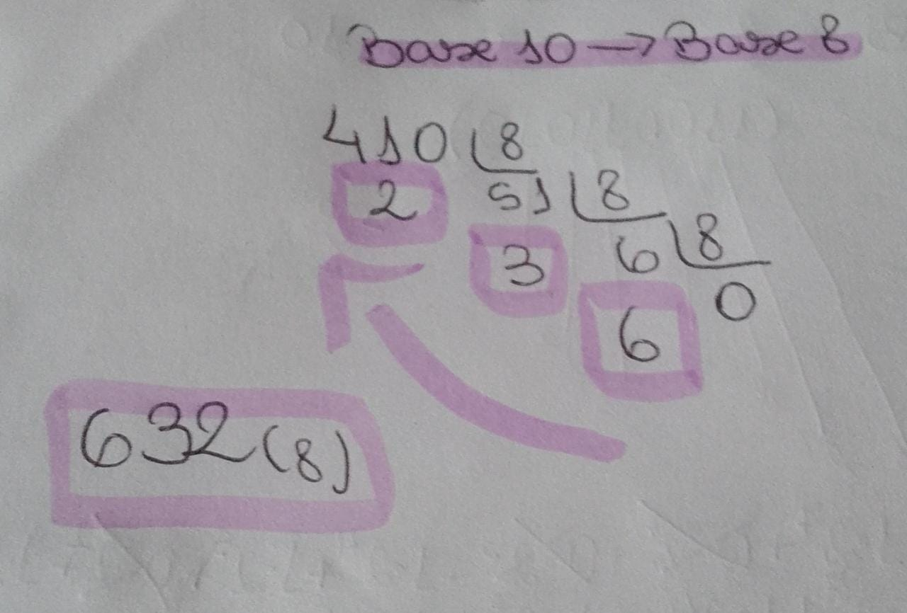
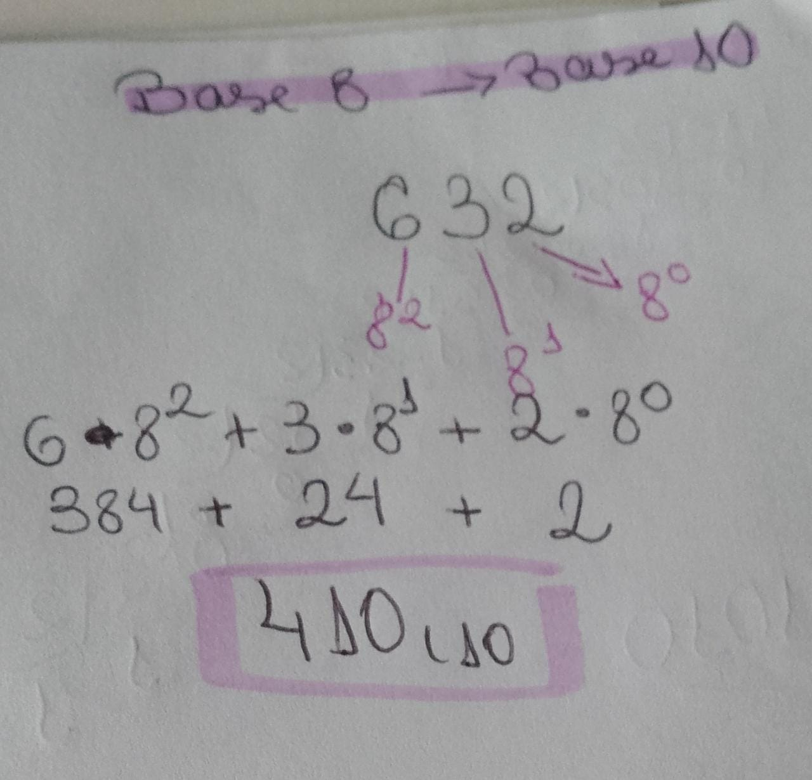
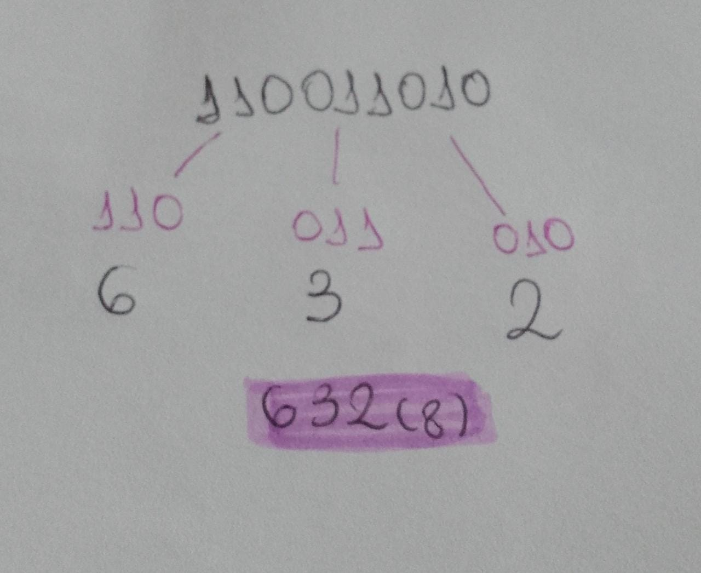
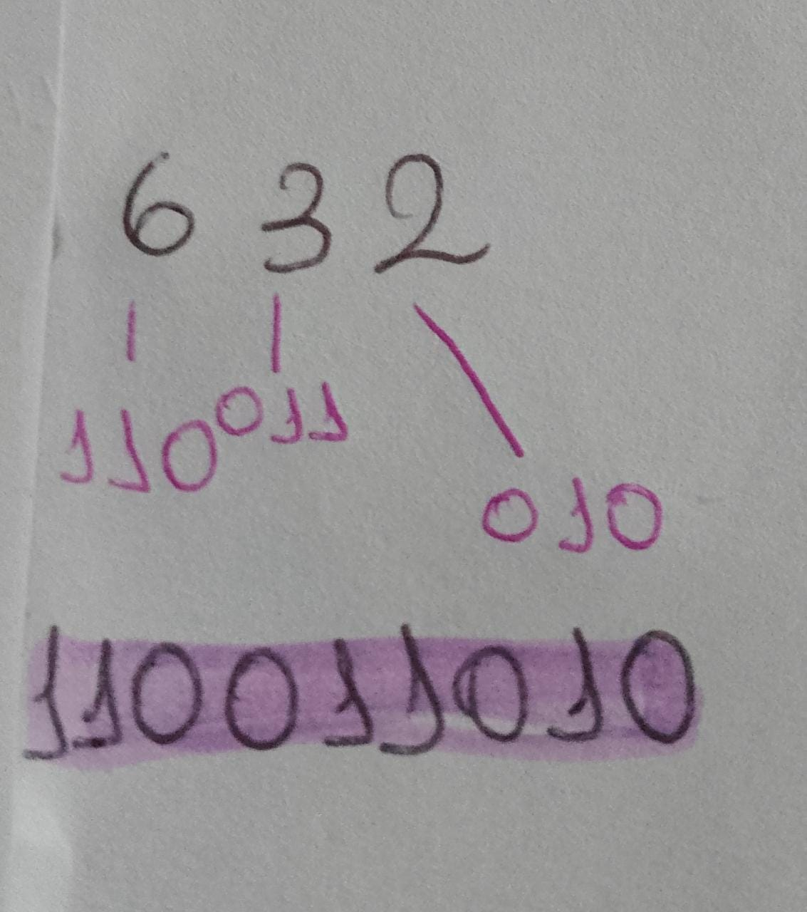

Definição do Sistema Octal
O sistema de numeração Octal ou também chamado de Base 8 possui oito dígitos, 0, 1, 2,
3, 4, 5, 6, 7.
A forma de arranjar os 8 dígitos para representar as diferentes quantidades
é a mesma usada anteriormente. Quando os 8 símbolos são todos usados, 0, 1,
2, 3, 4, 5, 6, 7, os próximos devem ser arranjos do 1 com cada um dos 8 símbolos,
então temos 10, 11, 12, 13, 14, 15, 16, 17, daí muda para os arranjos com 2, e
assim por diante.(Trecho tirado do material da
professora para ficar melhor explicado/Arquivo do Sistema de Numeração)
conversão
Base 10 para base 8
1-Primeiro deve-se dividir o número decimal sucessivamente por oito e guardar o
resultado.
2-O processo deve ser repetido até que o quociente seja igual a 8.
3- A conversão será obtida com a sequência dos restos junto com o último quociente,
começando pela direita.

Base 8 para base 10
1- Cada número octal deve ser multiplicado por uma potência de base 8, o último é igual a
8 elevado na 0, o penúltima 8 elevado na 1 e assim por diante.

Base 2 para base 8
- Para facilitar a conversão de base dois para base 10 podemos utilizar a tabela de
equivalência:
| Octal |
0 |
1 |
2 |
3 |
4 |
5 |
6 |
7 |
| Binário |
000 |
001 |
010 |
011 |
100 |
101 |
110 |
111 |
- Separar o número binário em grupos de 3 dígitos da direita para a esquerda, quando
necessário acrecenta-se zeros
- Seguindo a tabela de equivalência basta fazer a substituição.

Base 8 para base 2
- A conversão de base 8 para base 2 é feito ao contrário da conversão anterior, a diferença
é que ao invés de juntar os dígitos em grupos usamos apenas um.

|